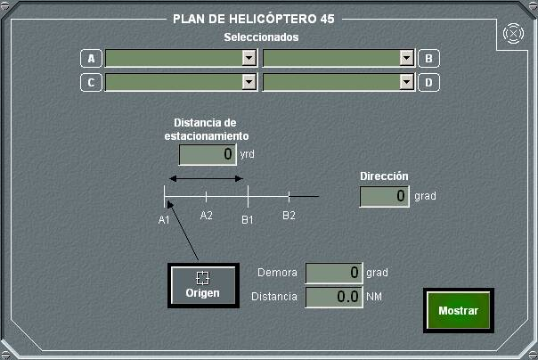

Planes de Helicópteros

El panel general de planes aéreos y de helicópteros permite seleccionar entre cinco tipos diferentes de planes aéreos y seis de helicópteros.
Pulsando en cada botón se abre el panel de detalle correspondiente al tipo de plan de helicóptero seleccionado.
Plan de Helicópteros 41/42/43
En el panel de detalle de plan de helicópteros 41/42/43 se pueden realizar las siguientes acciones:
- Seleccionar un grupo de dos a cuatro helicópteros amigos para asignarles el plan.
- Para un plan determinado, introducir los datos correspondientes, según procedimiento, teniendo en cuenta lo siguiente:
- El Origen del plan, se toma de la posición del Hook al pulsar el botón Origen, o se introduce manualmente, como una demora, distancia respecto a la unidad propia.
- El tipo del plan, 41, 42 o 43 se selecciona mediante la barra de desplazamiento correspondiente.
- Trazar el plan en la pantalla táctica, pulsando el botón Mostrar. En la pantalla táctica aparecerá un dibujo para el plan de helicópteros 41/42/43 , de acuerdo a los datos introducidos en el plan.
Plan de Helicópteros 44

En el panel de detalle de plan de helicópteros 44 se pueden realizar las siguientes acciones:
- Seleccionar un grupo de dos a cuatro helicópteros amigos para asignarles el plan.
- Para un plan determinado, introducir los datos correspondientes, según procedimiento, teniendo en cuenta lo siguiente:
- El Datum para el plan, se toma de la posición del Hook al pulsar el botón Origen, o se introduce manualmente, como una demora, distancia respecto a la unidad propia.
- Trazar el plan en la pantalla táctica, pulsando el botón Mostrar. En la pantalla táctica aparecerá un dibujo para el plan de helicópteros 44 , de acuerdo a los datos introducidos en el plan.
Plan de Helicópteros 45

En el panel de detalle de plan de helicópteros 45 se pueden realizar las siguientes acciones:
- Seleccionar un grupo de uno a cuatro helicópteros amigos para asignarles el plan.
- Para un plan determinado, introducir los datos correspondientes, según procedimiento, teniendo en cuenta lo siguiente:
- El Origen del plan, se toma de la posición del Hook al pulsar el botón Origen, o se introduce manualmente, como una demora, distancia respecto a la unidad propia.
- Trazar el plan en la pantalla táctica, pulsando el botón Mostrar. En la pantalla táctica aparecerá un dibujo para el plan de helicópteros 45, de acuerdo a los datos introducidos en el plan.
Plan de Helicópteros 46
En el panel de detalle de plan de helicópteros 46 se pueden realizar las siguientes acciones:
- Seleccionar un grupo de uno a cuatro helicópteros amigos para asignarles el plan.
- Para un plan determinado, introducir los datos correspondientes, según procedimiento, teniendo en cuenta lo siguiente:
- El Centro del plan, se toma de la posición del Hook al pulsar el botón Origen, o se introduce manualmente, como una demora, distancia respecto a la unidad propia.
- La columna de búsqueda para cada cuadrado se selecciona mediante las barras de desplazamiento correspondientes.
- Trazar el plan en la pantalla táctica, pulsando el botón Mostrar. En la pantalla táctica aparecerá un dibujo para el plan de helicópteros 46, de acuerdo a los datos introducidos en el plan.
Plan de Helicópteros 47
En el panel de detalle de plan de helicópteros 47 se pueden realizar las siguientes acciones:
- Seleccionar un grupo de dos helicópteros amigos para asignarles el plan.
- Para un plan determinado, introducir los datos correspondientes, según procedimiento, teniendo en cuenta lo siguiente:
- El Datum del plan, se toma de la posición del Hook al pulsar el botón Datum, o se introduce manualmente, como una demora, distancia respecto a la unidad propia.
- La orientación del plan, Izquierda o Derecha se selecciona mediante la barra de desplazamiento correspondiente.
- Trazar el plan en la pantalla táctica, pulsando el botón Mostrar. En la pantalla táctica aparecerá un dibujo para el plan de helicópteros 47, de acuerdo a los datos introducidos en el plan.
Plan de Helicópteros 48
En el panel de detalle de plan de helicópteros 48 se pueden realizar las siguientes acciones:
- Seleccionar un grupo de dos helicópteros amigos para asignarles el plan.
- Para un plan determinado, introducir los datos correspondientes, según procedimiento, teniendo en cuenta lo siguiente:
- El Origen del plan, se toma de la posición del Hook al pulsar el botón Datum, o se introduce manualmente, como una demora, distancia respecto a la unidad propia.
- Trazar el plan en la pantalla táctica, pulsando el botón Mostrar. En la pantalla táctica aparecerá un dibujo para el plan de helicópteros 48, de acuerdo a los datos introducidos en el plan.